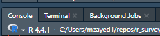
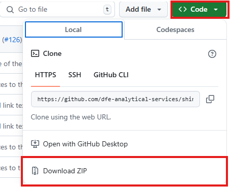
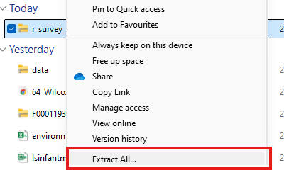
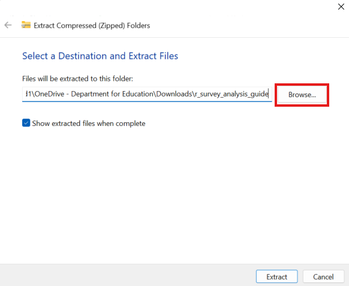
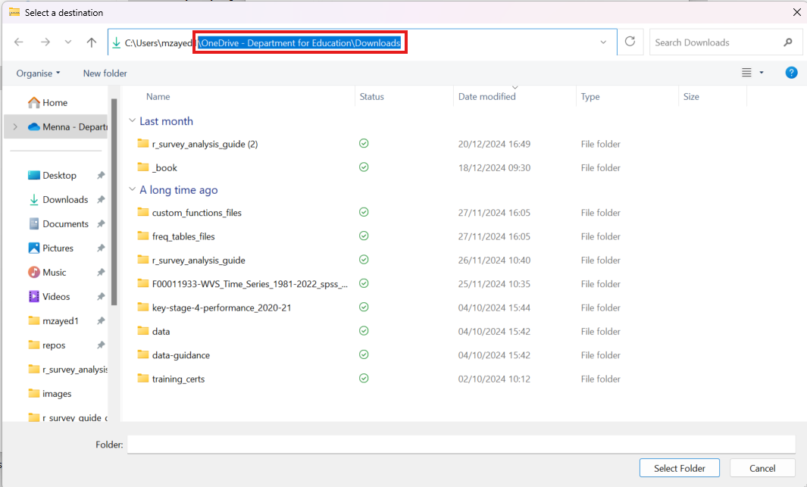
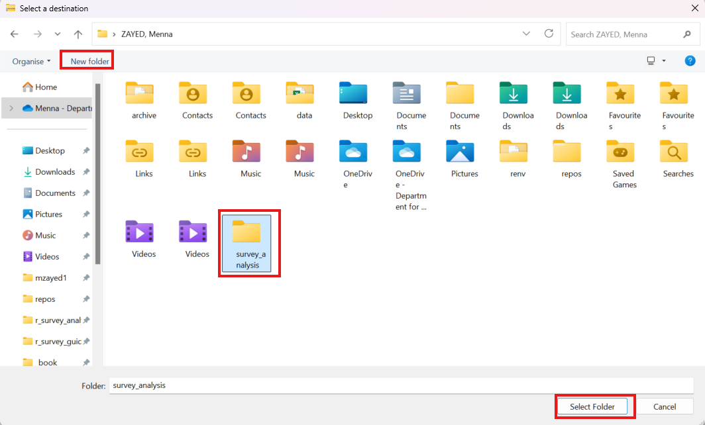
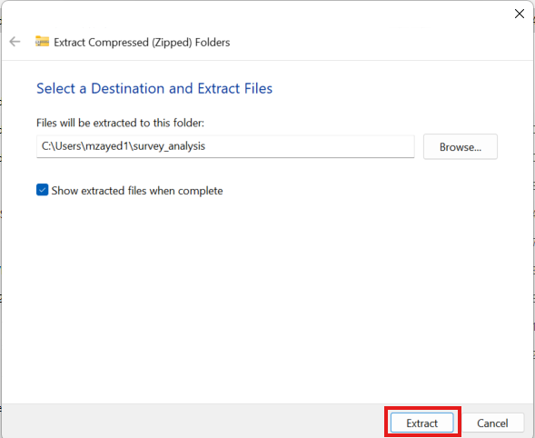
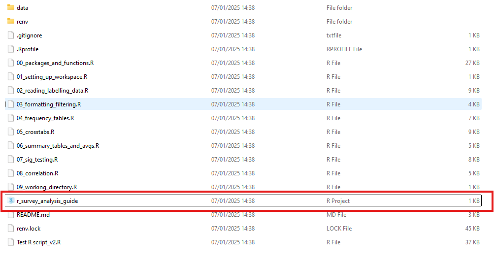
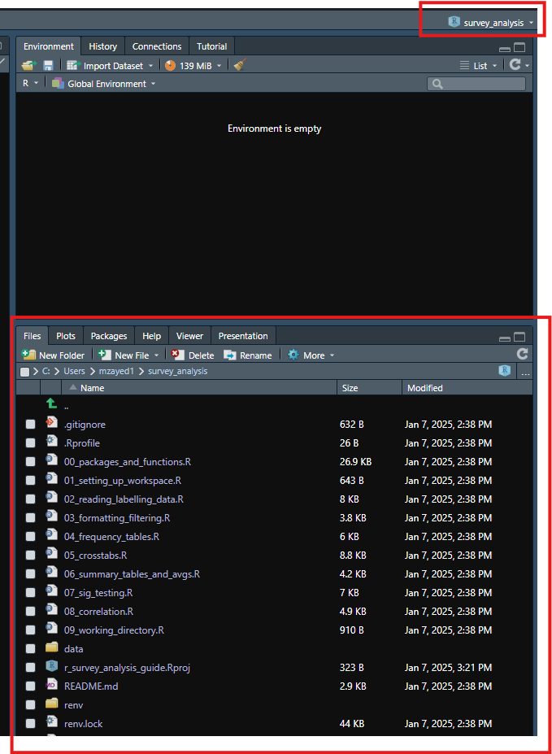

SuRvey analysis guide in R
Introduction
This is a guide on how to carry out routine analysis that is usually carried out in SPSS but in R. All the instructions for this guide are on this website and the code is in the scripts in the repository linked on this page in the Get the code section. It includes sections about how to:
set up your workspace
read in and label survey data that is in SPSS or CSV format
format, filter data and view data dictionaries
create frequencies
create crosstabs
create summary tables for numerical data
test for significance
test for correlation
change working directories - optional
start working with Git - optional
User guide
There are different ways to use this guide. You can:
use it to learn how to do survey analysis in R.
use it for your own projects
To use this guide to learn or for your own projects, you MUST complete steps 1, 2 and 3 below.
Step 1 - Download required software
Open Software Center on your laptop. You can navigate to it by searching “Software Center” in the search bar in the task bar.
Download the following software:
- R for Windows 4.4 or higher
- RStudio
- RTools 4.4 or higher
It is important that all your software needs to be the same version. For example, if R is 4.4, your RTools also needs to be 4.4.
You can find the version number under the name of the software in Software Center or by clicking on the software and looking for “Version:”
You can also check the R version you’re using in RStudio by checking the number under the console tab as shown in the image below. You can also use the function getRversion() in the console.

If you have the latest version of R downloaded but RStudio still shows an older one, use this guide to help you switch to the version of R you need.
Step 2 - Get the code
Follow the instructions below to download the scripts required for this guide.
Click on “Code”.
Click on “Download Zip”.

- Find the zipped file where you downloaded it and right click it. Then click “Extract all”.

- Click “Browse”.

Click on the file path in the pop-up window and delete everything up to your username. This changes the location to outside of your OneDrive.
- Saving R Projects outside OneDrive prevents any errors that happen with OneDrive permissions when downloading packages.

- Click “New Folder” and name your folder something like survey_analysis and then click “Select Folder”.

- Click “Extract”

This will download an R project with scripts that are separated into sections similar to the sections in this guide. Those scripts contain similar code to what is in this guide. The code will be saved in the survey_analysis folder or whatever name you chose to give that folder.
If you wish to use Git for this guide or your project, please use the Working with Git section for guidance.
Step 3 - Opening the R project
R Project files are a way of managing code for your analysis. It helps maintain a working directory and minimizes errors with package management. The zipped file you downloaded contains the R project file needed for this guide.
To open scripts for this guide in a project environment, follow these steps:
Open the folder your project is in.
Double click on the file with an R cube symbol next to it. This file has the file type
R Project. You can check this by looking at the file properties.

- When the project opens, you should be able to see the scripts in the “Files” pane in RStudio. You should also see the name of your folder at the top right-hand side of RStudio.
 - Open the scripts you need from here. If you’re using this for your own project, you can create scripts and save them here.
Step 4 - Set up your workspace
Make sure to set up your workspace in the setting up your workspace section of this guide. The two essential steps from that section are:
Step 5a - Use the guide for learning
To use the guide for learning, open the script corresponding to the section you’re on and run the pre-written code. After that you can create your own script in the project and write your own code variations and data using the outlined functions in the section to test your knowledge.
Step 5b - Use the guide for your own project
Delete all the scripts except for the
00_packages_and_functions.Rscript.- You can always go back to the repository and re-download the scripts for reference.
Rename your R Project file and the folder the project is in to reflect your own project.
Create your own scripts and use the functions you want for them.
Things to be aware of
Weights
SPSS calculates weighted results slightly differently to R. SPSS rounds weighted counts to the nearest whole number, and then bases any subsequent statistics off that.
R does not round, so results are slightly more accurate. You may find that results do not exactly match SPSS output (difference of <0.5pp) depending on how your contractor has calculated their weights.
Custom functions
We created custom functions to make using packages like survey even more user-friendly. We explain how to use those functions throughout this guide. You can use the Custom functions reference page as a quick guide for those functions.
Syntax
You will notice in this guide that most of the syntax for functions will follow this format, package::function(). For example, dplyr::mutate() or haven::read_spss(). This means that we are using the mutate() function from the dplyr package and the read_spss() function from the haven package. We use this syntax to ensure that:
- the correct function from the intended package is used.
- users are aware of which package that function comes from so they can look at documentation when reviewing code.
This is because different packages can have functions with the same name. If you load those packages together in one project, it is difficult to know which function you are using and you can end up using the wrong one. This can lead to inaccurate results.
Packages used in this guide
In this guide we use a mix of standard package functions and custom functions. We created custom functions to make using some of the standard functions even easier. These custom functions can be found in 00_packages_and_functions.R We will show examples of how to use both standard and custom functions in this guide.
Dplyr
We will be using the function dplyr::mutate() from the dplyr package in this guide. We will also be combining it with functions like dplyr::across().
Survey
This package is useful for producing:
frequency tables
crosstabs
summary tables
weighted averages
Functions in this package are part of the custom functions you will be using in this guide.
sjstats
This package contains a collection of functions that we will use for significance testing. We will show examples of how to use them in this guide.